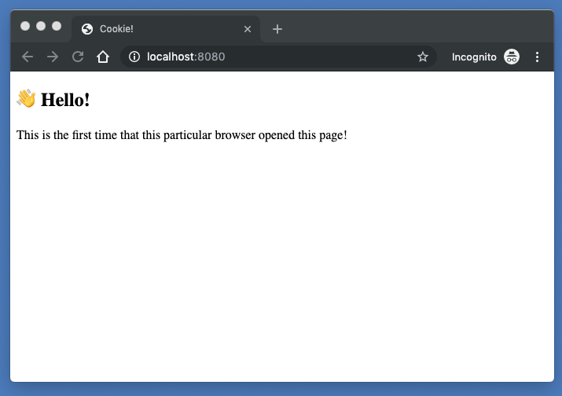
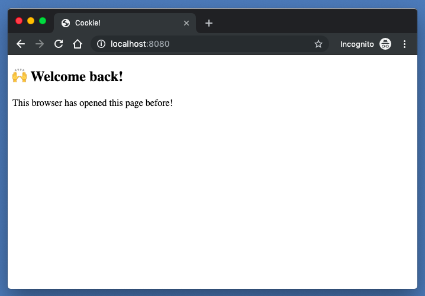

A web browser cookie is a way to store data that is associated with a website on a web browser. The best way to understand this is to understand a problem that cookies solve.
Imagine that you want to create a web site or web app that does the following. When a browser loads the web page for the first time, the web page shows a message like this:
On every subsequent visit, however, the web page shows a different message:
To solve this problem, you need to store the information that the browser visited the web page. When the web page loads, it checks and shows the right message.
How do you solve this problem?
There are a few solutions and browser cookies are one of them.
A cookie is a way to store data that is associated with a particular website on a web browser. Cookies are key-value pairs like favoriteNumber:42 and enjoysTacos:true. A programmer can create, change, and delete cookies. Here is a way to use cookies to solve the problem above.
When the page loads, use JavaScript to look up the website's cookies and look for the hasVisited cookie. If there is no such cookie, it means that the web browser has never been to the site so show the message in the first screenshot and then use JavaScript to create a cookie called hasVisited that is set to true. If there is such a cookie, then show the message in the second screenshot. Here is the code.
The first file sets up a very, very simple web server to serve our html and javascript. This is necessary because cookies do not work when browsers access files via the file protocol (i.e. file:///Users/markschumaker/...).
server.js
const http = require('http');
const fs = require('fs');
const port = 8080;
const handleRequest = (request, response) => {
let indexFile = fs.readFileSync('./index.html');
response.writeHead(200, {'Content-Type': 'text/html'});
response.end(indexFile);
}
const server = http.createServer(handleRequest);
server.listen(port, () => {
console.log('Go to http://localhost:8080/ with your browser.');
});
You can run this by typing in node server.js in your terminal while in the directory that contains the file.
The next file contains the code for the actual web page. All the cookie stuff happens in the <script> tag.
index.html
<!DOCTYPE html>
<html>
<head>
<meta charset="utf-8">
<title>Cookie!</title>
</head>
<body>
<div id="welcome-back" hidden>
<h2>🙌 Welcome back!</h2>
<p>This browser has opened this page before!</p>
</div>
<div id="welcome" hidden>
<h2>👋 Hello!</h2>
<p>This is the first time that this particular browser opened this page!
</div>
<script>
if (document.cookie.includes('hasVisited')) {
// show the "Welcome Back!" message
document.querySelector('#welcome-back').hidden = false;
} else {
// set cookie
document.cookie = 'hasVisited=true';
// show "This is the first time" message
document.querySelector('#welcome').hidden = false;
}
</script>
</body>
</html>
When you hit this page for the first time in a web browser, you'll see the "👋 Hello!" message. Every other time, you'll see the "🙌 Welcome back!" message. Go ahead and try it.
It is really important to know that cookies are browser specific. If you load the page multiple times in Chrome and then open the page in Firefox, you'll see the "👋 Hello!" message because your copy of Firefox does not share its cookies with your copy of Chrome. If you load the page multiple times in Chrome and then open Chrome on a different computer, you'll see the "👋 Hello!" message.
It is also important to emphasize that cookies are associated with particular websites. The cookies for www.google.com are totally different from the cookies for www.yahoo.com.
That's pretty much it. Cookies are key-value pairs that are stored in particular web browsers and associated with websites. As a programmer, you can use them to store data on someone's copy of a web browser and then change or delete them to modify the behavior of a website.